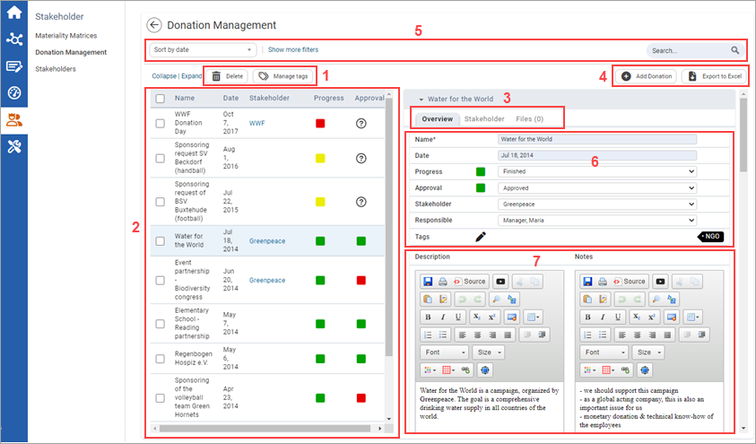
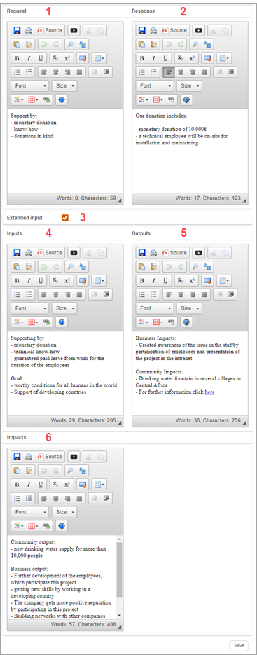

) or manage tags (
) or manage tags ( ).
). to add a donation request. Click
to add a donation request. Click  to export all requests to Excel, or click to import from Excel.
to export all requests to Excel, or click to import from Excel. to save your changes.
to save your changes.The Donation Management module allows you to centrally manage the donation requests and assign them to stakeholders.

| 1 | Select the checkboxes in conjunction with the action symbols to delete entries () or manage tags (). |
| 2 | Here you can see the individual donation requests. This list displays information about the Name, Date and Stakeholder of the request. Progress and Approval status are conveyed via traffic light colors. |
| 3 | Here you can get an overview of the appropriate stakeholder as well as upload files. |
| 4 | Click to add a donation request. Click to export all requests to Excel, or click to import from Excel. |
| 5 | Use the Search function to browse through the displayed entries by typing any term into the search field. You can click Show more filters to use more filters as well as Collapse and Expand all entries. You can also use the drop-down menu to filter by specific criteria. |
| 6 | Here you can enter the Name and Date of the donation request; click on the date to open a calendar where you can select the relevant date; choose the status of Progress (not started, in progress, finished) and Approval (not decided, approved, declined); choose the Stakeholder and Responsible person of the request, or define the Tags. |
| 7 | Add a Description and Notes in these text fields. Click to save your changes. |

1 | Enter the Request in the first text field (e.g. you can copy the whole request or enter bullet points). |
| 2 | Use this text field to enter the Response of the donation request. |
3 | Select this checkbox to enter Extended input. Additional text fields will be displayed corresponding to the London Benchmarking Group model (LBG model). This framework includes input, output and impact. |
4 | Enter the Inputs of the donation here. The information should include:
|
5 | Enter the Output of the donation here. The information should include:
|
6 | Use the last text field to enter the Impacts, which among other things should include:
|
Click Save to save your changes. In the Discussions panel you can create discussions and find existing ones.